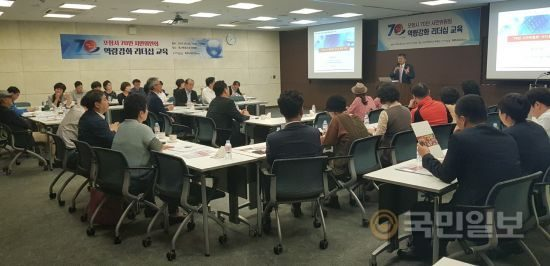

등록일 2019-10-11
포항시, 70인 시민위원회 세미나 개최
지난 24일 경북 포항시 70인 시민위원을 대상으로 역량강화 리더십 세미나가 열렸다. 포항시 제공.
경북 포항시는 지난 24일 포스코 국제관 중회의실에서 70인 시민위원을 대상으로 역량강화 리더십 세미나를 개최했다.
이번 세미나는 포항시민을 대표하는 시민위원으로서 시민들의 자긍심을 고취하고 70인 시민위원들의 결속력 및 활동역량을 강화하기 위해 기획됐다.
24일 셀프리더십 교육을 시작으로 10월 1일, 8일 3주에 걸쳐 진행될 예정이다.
포스텍 리더십 전담교수와 전문가가 공동으로 교육하고 셀프 리더십, 대인관계 리더십, 팀워크 리더십 매주 연관성 있는 주제별로 진행된다.
셀프 리더십 교육은 자신의 현 상황에서 스스로 리더가 돼 능동적인 인재로 변화하는 리더십 교육으로 자아관찰을 통해 객관적 자아를 확립할 수 있고, SWOT분석 기법을 통해 자신에게 필요한 리더십 항목을 찾아내고 강화하는 내용으로 진행됐다.
‘70인 시민위원회’는 시 승격 70년을 맞아 지난해 11월 재능기부를 위해 응모한 시민을 대상으로 20대 대학생에서부터 70대에 이르기까지 다양한 연령과 직업군을 고려해 구성했으며 오는 12월 말까지 활동할 계획이다.
송경창 포항시 부시장은 “구성원의 감정을 이해하고 배려해 조직 구성원들과 긍정적인 관계를 형성하고 책임감과 배려심, 공동체 의식강화를 위해 리더십 교육을 준비했다”며 “70인 시민위원을 통해
시민들의 다양한 목소리가
더 많이 전달될수록 포항시가 시민과 함께 앞으로 한발 나아갈 수 있는 원동력이 된다”고 말했다.
포항=안창한 기자 changhan@kmib.co.kr
[출처] - 국민일보
[원본링크] -
http://news.kmib.co.kr/article/view.asp?arcid=0013752292&code=61122022&cp=nv

